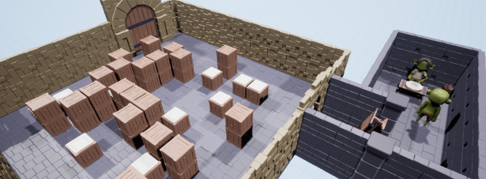

- The Legend Of Goblina -

Context du projet
Le projet consiste à créer un jeu d'infiltration sur Unreal Engine. Le temps imparti est de 4 semaines. Le langage utilisé est le C++ (pas de blueprint).
Notre jeu
Le jeu se déroule dans une réserve de nourriture dans laquelle des IA apporte des morceaux de viandes régulierement.
Le but est de récupérer cette nourriture et de l'amener dans le repère du protagoniste sans se faire repérer.
La map est générée de façon procédurale.
Date de création du projet
Quatrième projet fait lors de la troisième année au sein du Gaming Campus, bachelor informatique option jeux vidéo.
Equipe
L'equipe est composé de 3 développeurs en troisième année au Gaming Campus.
Liens vers le Code et la Build du jeu
Code
Cliquez ici pour acceder au GitHub
Build
Cliquez ici pour télécharger le jeu